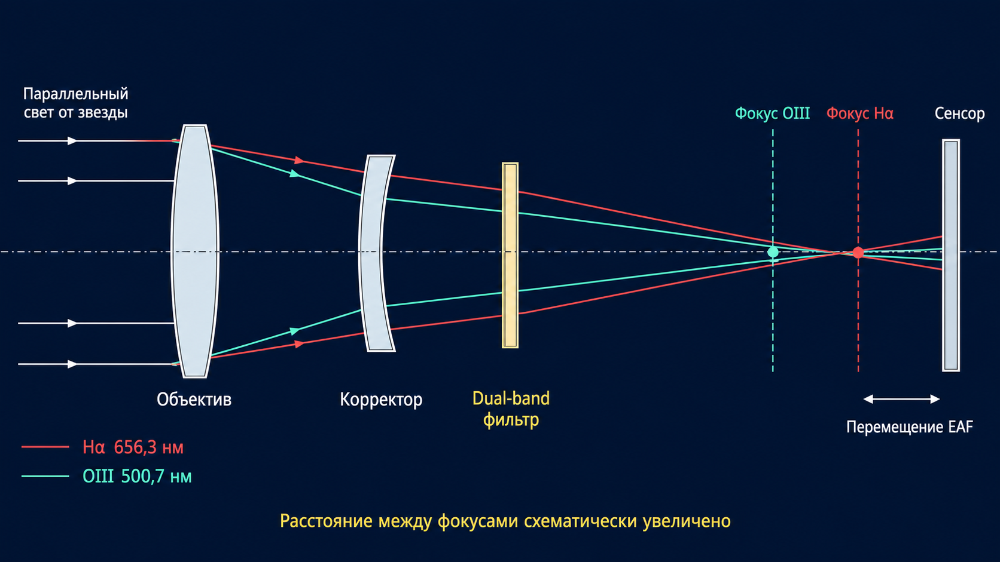

Open-source · Raspberry Pi Pico · ASIAIR
One physical filter.
Three virtual focus slots.
VFS lets ASIAIR apply separate ZWO EAF offsets for the Ha- and OIII-dominated channels of a permanently installed dual-band filter.
- 3virtual slots
- RP2040USB HID emulator
- Opensource & firmware

What changes
One filter remains fixed. Only the focus position changes.
The animation is a conceptual visualization, not an optical simulation. The distance between focal planes is deliberately exaggerated.
ASIAIR configuration
Calibrate first, then let the plan repeat the workflow.
Offsets and backlash are specific to your optical system. The values visible below are examples—measure your own before imaging.
01
Choose when autofocus runs
In EAF Auto Focus settings, enable Before Autorun/Each Target Start. For this workflow, leave the other Autorun/Plan triggers off.

02
Enter your measured offsets
Name the virtual slots, make one slot the reference, enter the Ha and OIII offsets, then enable Use Filters Offsets.

03
Compensate focuser backlash
Measure the backlash of your focuser and enter it in the EAF settings. Accurate compensation is important when offsets move the focuser in different directions.

Imaging plan
Bookend every target with the reference slot.
Start and finish each target sequence with one short exposure assigned to the reference slot. Exposure time is not important; one frame is enough. Between them, place the Ha and OIII blocks you actually want to capture.
The plan's estimated duration is approximately the interval between autofocus runs. Shorten the blocks if you need autofocus more often. Arrange any block that overlaps a meridian flip so it ends immediately before or starts just after the flip.


Installation
Flash a Pico in a few minutes.
No compiler is required when using the ready-made UF2 release.
- 1Download the latest UF2
Get the firmware from the project's GitHub Releases page.
- 2Enter BOOTSEL mode
Hold the Pico's BOOTSEL button while connecting it to your computer by USB.
- 3Copy the firmware
Drag the UF2 file onto the
RPI-RP2drive. The board reboots automatically. - 4Connect to ASIAIR
Plug the Pico into ASIAIR. It should appear as a ZWO EFW with virtual slots.
Before a real session: confirm slot switching and EAF movement indoors. VFS does not measure offsets for you; it applies values you have already calibrated.
Scope
Small tool, deliberately narrow purpose.
It does
Emulate a compatible USB HID filter wheel, expose virtual slots, and let ASIAIR activate stored EAF offsets.
It does not
Move a physical filter, control the EAF directly, determine the correct focus offset, or guarantee compatibility with future ASIAIR updates.
Build it, test it, improve it
Ready to try Virtual Filter Slots?
Read the detailed documentation, download the firmware, or inspect the source code.
The observation
Autofocus found a compromise, not both channel minima.
Measure separately
On the tested f/4 system, the red and green channels reached their smallest stars at different EAF positions.
Store the offsets
ASIAIR can apply calibrated filter offsets—but only when it detects an electronic filter wheel.
Virtualize the slots
A Pico presents three virtual EFW positions while the physical dual-band filter stays in place.
The idea
The emulator changes state. ASIAIR moves the focuser.
VFS never controls the EAF directly and never moves a physical filter. It supplies the virtual slot change that activates ASIAIR's own filter-offset workflow.
1ASIAIRselects Reference, Ha, or OIII
2Raspberry Pi Picoreports the virtual EFW slot
3ZWO EAFmoves by the calibrated offset